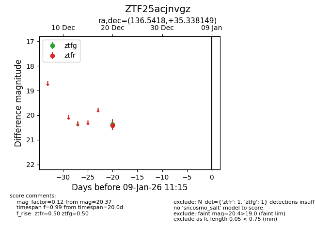
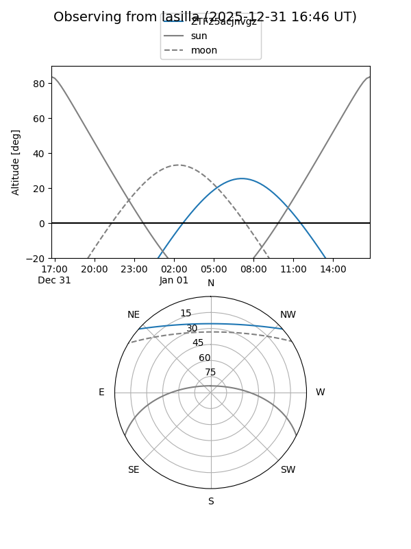
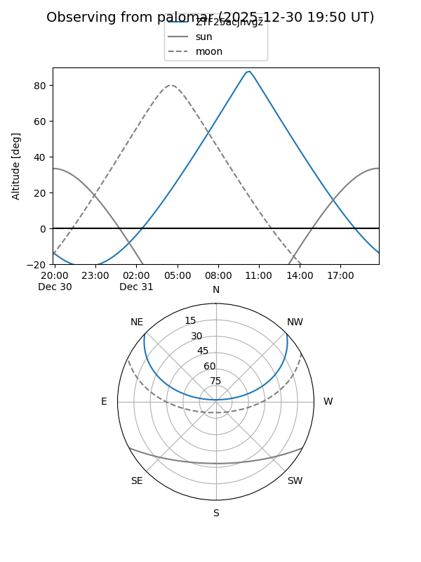

ZTF25acjnvgz
Target ZTF25acjnvgz at 2025-12-20 12:14
Aliases and brokers:
FINK: fink-portal.org/ZTF25acjnvgz
Lasair: lasair-ztf.lsst.ac.uk/objects/ZTF25acjnvgz
ALeRCE: alerce.online/object/ZTF25acjnvgz
alt names
ZTF25acjnvgz (ztf,fink_ztf)
Coordinates:
equatorial (ra, dec) = 136.5418,+35.33815
equatorial (HMS+DMS) = 09:06:10.04,+35:20:17.34
galactic (l, b) = (188.4928,+41.78812)
Flags:
Photometry:
last ztfr=20.40
1 ztfr detections
Lightcurve

Visibility


Additional plots